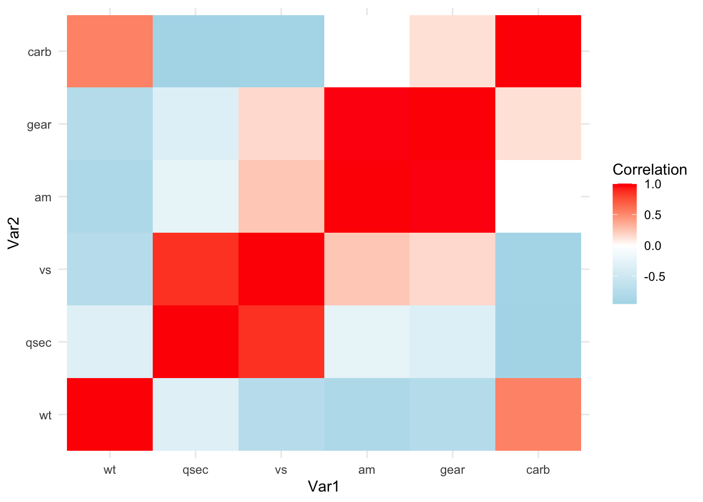
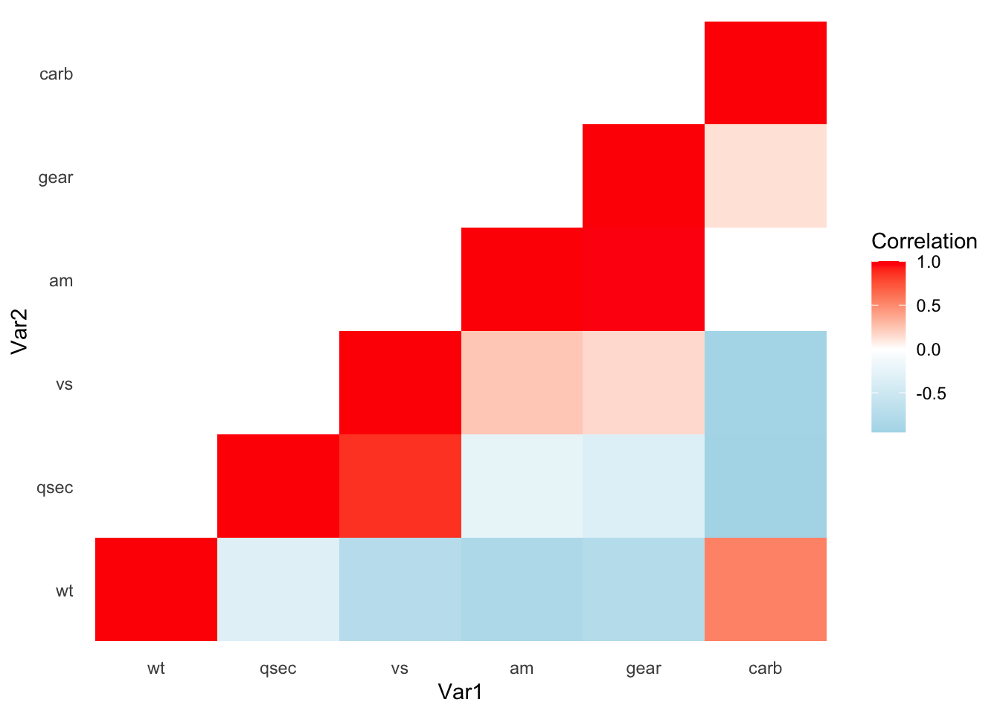
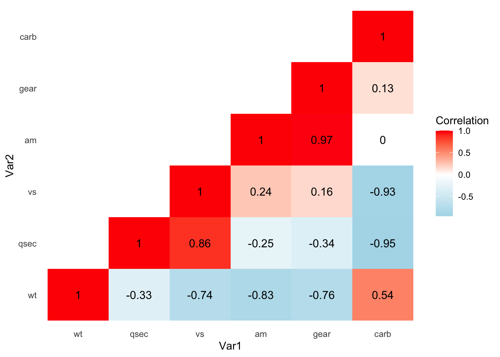
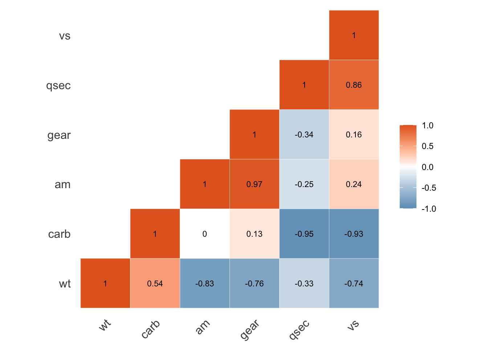

library(ggplot2)
library(reshape2)
library(RColorBrewer)
cor_matrix <- cor(mtcars[6:11])
cormat <- round(cor(cor_matrix),2)
cor_melt <- melt(cormat, na.rm = TRUE)상관관계 히트맵 (Correlation heatmap)은 상관관계 매트릭스를 시각화한 것으로, 데이터세트에서 변수 간의 쌍(pair)별 상관관계를 시각화하는 데 사용됩니다. 상관관계 히트맵에서 각 셀은 두 변수 간의 상관계수를 나타내며 셀의 색상은 상관관계의 강도와 방향을 나타냅니다. 일반적으로 색상 그라데이션이 사용되는데, 한 색상은 양의 상관관계를 나타내고 다른 색상은 음의 상관관계를 나타냅니다. 색상의 강도는 상관관계의 강도를 나타내구요.
상관관계 히트맵은 여러 경우에 쓰일 수 있습니다. 예를 들어 탐색적 데이터 분석 (EDA) 과정에서 상관관계 히트맵은 변수 간의 잠재적 관계 또는 연관성을 식별하는 데 도움이 될 수 있습니다. 추후 이 결과를 바탕으로 회귀분석 등 심화 분석을 진행할 수 있습니다.
또한 머신러닝이나 통계 모델링에서 상관 히트맵을 사용하여 다중 공선성으로 이어질 수 있는 고도로 상관된 기능을 식별하고 제거하여 모델의 안정성과 해석 가능성을 향상시킬 수 있습니다.
아무래도 상관계수를 숫자로 보여주는 테이블을 제시해주는 것보다는 상관관계 히트맵을 통해 각 변수 간 상관성을 보여주는 것이 더욱 직관적이고 시각적으로 매력적인 분석결과일 것입니다.
그래서 이번 포스트에서는 R을 이용해 상관관계를 시각화하는 상관관계 히트맵을 만드는 방법을 살펴보겠습니다.
ggplot2
R에서 데이터 시각화에 가장 많이 사용되는 패키지는 단연코 ggplot2일 것입니다. ggplot2를 이용해 상관관계 히트맵을 그리려면 특정 데이터의 상관행렬을 구해야 합니다.
mtcars 데이터를 이용해 예시를 들어보겠습니다.
cor() 함수를 이용해 상관행렬을 만들었고, 각 상관계수를 소수점 둘째 자리에서 반올림해주었습니다.
또한 시각화를 용이하게 하기 위해 해당 매트릭스를 long 형태로 변경하였습니다.
이 상태로 ggplot2을 이용해 히트맵을 그려보면 다음과 같습니다.
ggplot(cor_melt, aes(x = Var1, y = Var2, fill = value)) +
geom_tile() +
scale_fill_gradient2(low = "#abd9e9", mid = "#FFFFFF", high = "#FF0000", midpoint = 0, space = "Lab", name="Correlation") +
theme_minimal()
그럴 듯한 상관관계 히트맵이 만들어졌습니다. 그런데 상관관계 히트맵에서는 대각행렬을 기준으로 위와 아래가 동일한 값을 갖게 됩니다. 자신과의 상관성을 나타내는 대각선의 1을 기준으로 아래와 위가 같은 것을 알 수 있습니다.
따라서 대각행렬을 기준으로 위 또는 아래의 값만 시각화를 해주는 것이 더욱 깔끔한 그래프를 시각화하는 데 도움이 됩니다.
아래의 예시에서는 대각선을 기준으로 아래의 값만 남겨두도록 하겠습니다. 위의 값을 없애주어야 하기 때문에 upper.tri() 함수를 이용합니다. (아래의 값을 없애주고 싶은 경우는 lower.tri() 를 사용하면 됩니다.)
lower_tri <- cormat
lower_tri[upper.tri(lower_tri)] <- NA #OR upper.tri function
cor_melt_lower <- melt(lower_tri, na.rm = TRUE)그런 뒤에 다시 시각화를 해보면 다음과 같은 결과가 나타납니다.
cor_heatmap <- ggplot(cor_melt_lower, aes(x = Var1, y = Var2, fill = value)) +
geom_tile() +
scale_fill_gradient2(low = "#abd9e9", mid = "#FFFFFF", high = "#FF0000", midpoint = 0, space = "Lab", name="Correlation") +
theme_minimal() +
theme(panel.grid.major = element_blank())
cor_heatmap
이제 이 그래프에 상관계수를 넣어주기만 하면 될 것 같습니다.
cor_heatmap +
geom_text(aes(Var1, Var2, label = value), color = "black", size = 4)
ggcorrplot
위에서는 ggplot2 패키지를 이용해 상관관계 히트맵을 만드는 코드를 살펴보았습니다. 다만 위의 코드가 너무 길고 복잡하여, 이해하기 힘들 수 있다는 단점이 있습니다. 아무래도 ggplot2를 통해 일일이 옵션을 설정해주어야 하기 때문에 어쩔 수 없습니다.
이러한 단점을 보완하고자 ggcorrplot이라는 패키지를 이용해 correlation heatmap 을 그릴 수 있습니다.
install.packages("ggcorrplot")
library(ggcorrplot)# p-value 유의미성 위한 계산
p.mat <- cor_pmat(mtcars)
ggcorrplot(cormat,
method = "square",
type = "lower",
colors = c("#6D9EC1", "white", "#E46726"),
ggtheme = theme_minimal,
lab = T,
lab_col = "black",
lab_size = 3,
outline.color = "white",
hc.order = T,
p.mat = p.mat,
insig = "blank",
show.diag = T,
legend.title = ""
) +
theme(panel.grid.major = element_blank())
ggcorrplot() 함수를 이용해 히트맵 작성이 가능합니다.
ggcorrplot()에 쓰이는 주요 인자들은 다음과 같습니다.
method: heatmap 을 채워 줄 모양을 선택합니다. square, circletype: heatmap 모양을 설정합니다. full, lower, upperggtheme: 그래프의 전반적인 테마. ggplot2 또는 테마 관련 패키지의 테마 함수 사용 (e.g.,theme_())colors: heatmap의 low, mid, high 순으로 색상을 지정합니다.outline.color:method에서 설정한 square 또는 circle의 테두리색상lab: 상관계수 표시 여부lab_size: 상관계수 글자 크기lab_col: 상관계수 글자 색상
hc.order: 상관계수에 따른 정렬p.mat: 상관계수의 p-value matrixinsig: 상관계수가 유의미하지 않을 경우 표시할 방법: ‘blank’
show.legend: 범례 표시 여부legend.title: 범례 제목.
ggcorrplot을 통해 만들어지는 그래프 역시 ggplot2 기반이기 때문에, ggplot()에서 사용할 수 있는 옵션들을 사용할 수 있다는 장점이 있습니다.
참고자료
http://www.sthda.com/english/wiki/ggcorrplot-visualization-of-a-correlation-matrix-using-ggplot2